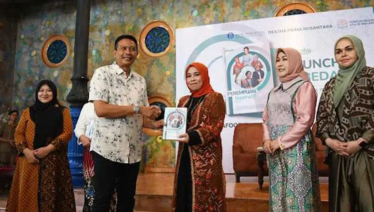

Terpilih Jadi Perempuan Inspiratif 2024, Begini Kisah Prof Ilfi Nur Diana

Prof. Ilfi Nur Diana menjadi salah satu tokoh yang kisahnya dimuat dalam buku Perempuan Inspiratif.
Prof. Dr. Ilfi Nur Diana, M.Si terpilih sebagai salah satu Perempuan Inspiratif 2024. Kisahnya masuk dalam buku Perempuan Inspiratif yang diterbitkan PT Deazha Prima Nusantara.
Prof Ilfi dikenal sebagai akademisi UIN Maulana Malik Ibrahim Malang dan pernah menjabat sebagai Wakil Rektor bidang AUPK. Selain berkiprah di kampus, ia juga menjadi bagian dari pengasuhan Pondok Pesantren Terpadu Alyasini Pasuruan.
Tanggung Jawab Sejak Kecil
Dalam peluncuran dan bedah buku, Prof Ilfi bercerita bahwa sejak kecil ia terbiasa diberi tanggung jawab oleh orang tuanya, termasuk mengajar mengaji adik-adik kelasnya. Pengalaman di pesantren juga membentuk kepemimpinannya sejak usia muda.
Ia menekankan pentingnya pendekatan yang nyaman dalam mendidik anak, termasuk saat mendampingi mereka menghafal Al-Qur'an. Kisah ini menjadi bagian dari teladan tentang perempuan, keluarga, pendidikan, dan kepemimpinan.
Sumber: TIMES Indonesia